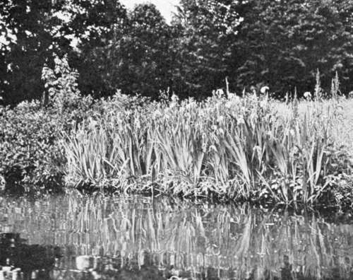

Treatment Of Water. Part 2
Description
This section is from the book "Landscape Gardening", by Andrew Jackson Downing. Also available from Amazon: Landscape Gardening.
Treatment Of Water. Part 2
If, then, the improver will recur to the most beautiful small natural lake within his reach, he will have a subject to study and an example to copy well worthy of imitation. If he examine minutely and carefully such a body of water, with all its accompaniments, he will find that it is not only delightfully wooded and overshadowed by a variety of vegetation of all heights, from the low sedge that grows on its margin, to the tall tree that bends its branches over its limpid wave; but he will also perceive a striking peculiarity in its irregular outline. This, he will observe, is neither round, square, oblong, nor any modification of these regular figures, but full of bays and projections, sinuosities, and recesses of various forms and sizes, sometimes bold, and reaching a considerable way out into the body of the lake, at others, smaller and more varied in shape and connection. In the heights of. the banks, too, he will probably observe considerable variety. At some places, the shore will steal gently and gradually away from the level of the water, while at others it will rise suddenly and abruptly, in banks more or less steep, irregular, and rugged.
Rocks and stones covered with mosses, will here and there jut out from the banks, or lie along the margin of the water, and the whole scene will be full of interest from the variety, intricacy, and beauty of the various parts. If he will accurately note in his mind all these varied forms — their separate outlines, the way in which they blend into one another, and connect themselves together, and the effect which, surrounding the water, they produce as a whole, he will have some tolerably correct ideas of the way in which an artificial lake ought to be formed.
Let him go still further now, in imagination, and suppose the banks of this natural lake, without being otherwise altered, entirely denuded of grass, shrubs, trees, and verdure of every description, remaining characterized only by their original form and outline; this will give him a more complete view of the method in which his labors must commence; for uncouth and apparently mis-shapen as those banks are and must be, when raw and unclothed, to exhibit all their variety and play of light and shadow when verdant and complete, so also must the original form of the banks and margin of the piece of artificial water, in order finally to assume the beautiful or picturesque, be made to assume outlines equally rough and harsh in their raw and incomplete state.
It occasionally happens, though rarely, that around the hollow or valley where it is proposed to form the piece of water, the ground rises in such irregular form, and is so undulating, receding, and projecting in various parts, that when the water is dammed up by the head below, the natural outline formed by the banks already existing, is sufficiently varied to produce a pleasing effect without much further preparatory labor. This, when it occurs, is exceedingly fortunate; but the examples are so unfrequent, that we must here make our suggestions upon a different supposition.
When, therefore, it is found that the form of the intended lake would not be such as is desirable, it must be made so by digging. In order to do this with any exactness the improver should take his stand at that part of the ground where the dam or head is to be formed, and raising his levelling instrument to the exact height to which the intended lake will rise, sweep round with his eye upon the surrounding sides of the valley, and indicate by placing marks there, the precise line to which the water will reach. This can easily be done throughout the whole circumference by a few changes of position.
When the outline is ascertained in this way, and marked out, the improver can, with the occasional aid of the leveller, easily determine where and how he can make alterations and improvements. He will then excavate along the new margin, until he makes the water line (as shown by the instrument) penetrate to all the various bays, inlets, and curves of the proposed lake. In making these irregular variations, sometimes bold and striking, at others fainter and less perceptible, he can be guided, as we have already suggested, by no fixed rules, but such as he may deduce from the operations of nature on the same materials, or by imbuing his mind with the beauty of forms in graceful and refined art. In highly polished scenery, elegant curves and graceful sweeps should enter into the composition of the outline; but in wilder or more picturesque situations, more irregular and abrupt variations will be found most suitable and appropriate.
Fig. 19. Pond Shore Planted with Iris, Etc.
The intended water outline once fully traced and understood, the workmen can now proceed to form the banks. All this time the improver will keep in mind the supposed appearance of the bank of a natural lake stripped of its vegetation, etc., which will greatly assist him in his progress. In some places the banks will rise but little from the water; at others one or two feet, and at others perhaps three, four, or six times as much. This they will do, not in the same manner in all portions of the outline, sloping away with a like gradual rise on both sides, for this would inevitably produce tameness and monotony, but in an irregular and varied manner; sometimes falling back gradually, sometimes starting up perpendicularly, and again overhanging the bed of the lake itself.
All this can be easily effected while the excavations of those portions of the bed which require deepening are going on. And the better portions of the soil obtained from the latter, will serve to raise the banks when they are too low.
It is of but little consequence how roughly and irregularly the projections, elevations, etc., of the banks and outlines are at first made, so that some general form and connection is preserved. The danger lies on the other side, viz., in producing a whole too tame and insipid; for we have found by experience, how difficult it is to make the best workmen understand how to operate in any other way than in regular curves and straight lines. Besides, newly moved earth, by settling and the influence of rains, etc., tends, for some time, towards greater evenness and equality of surface.
Continue to: